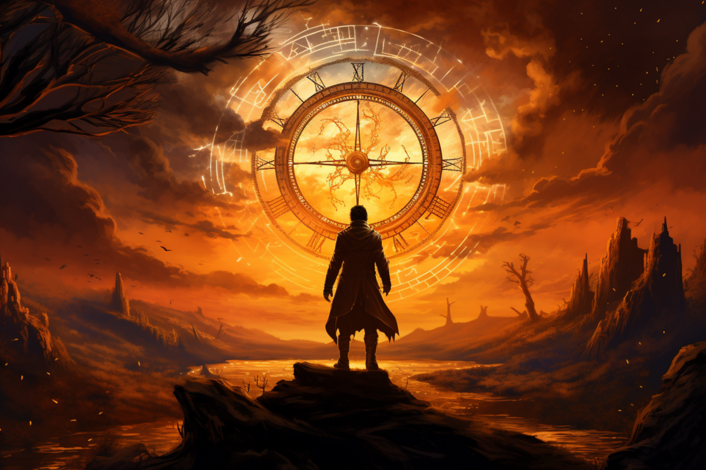
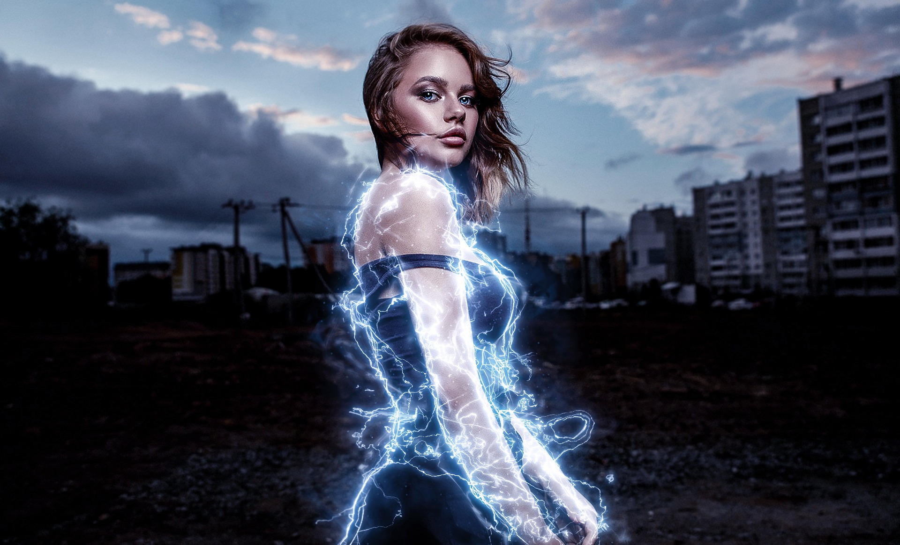
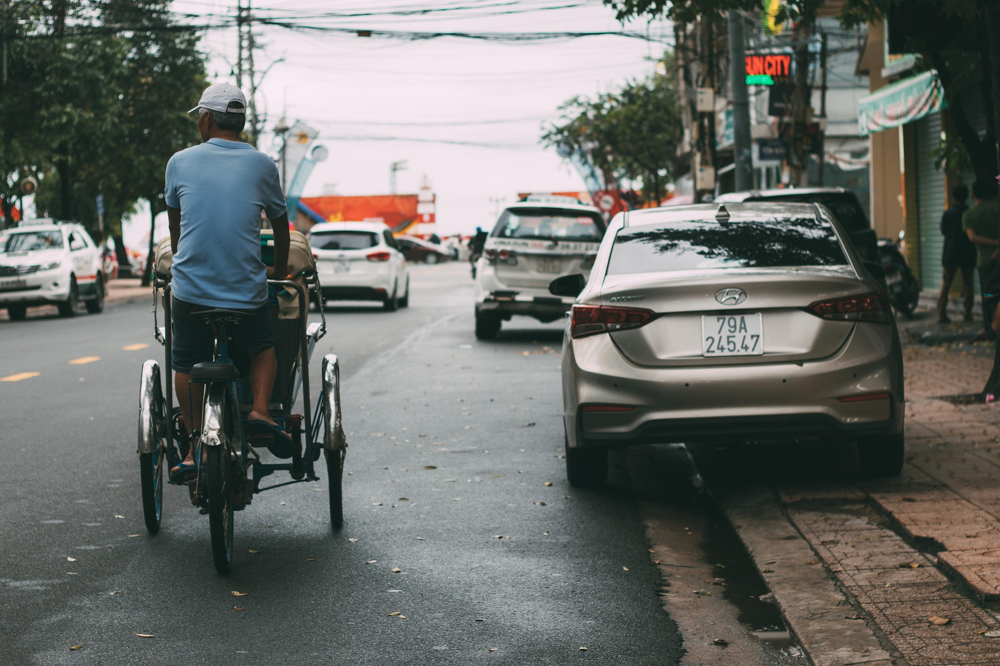

L'IMPROSE
THÈMES
Des idées pour nourrir vos improvisations
POUR COMMENCER
Quelques idées de thèmes
Voici quelques exemples de thèmes pour lancer une improvisation. Un même thème peut être interprété de nombreuses façons selon les personnages, le contexte et les contraintes choisies.

Le monde du travail

Les super-héros
Relations familiales
Univers fantastiques

Vie quotidienne
COMPRENDRE
Qu'est-ce qu'un thème ?
En improvisation, un thème est le sujet ou l'idée de départ d'une scène. Il peut s'agir d'un lieu, d'un objet, d'un métier, d'un événement, d'une émotion ou encore d'un univers imaginaire.
Le thème donne une direction aux improvisateurs sans imposer le déroulement de l'histoire. Il laisse aux joueurs la liberté de construire leurs personnages, leurs relations et leur récit.
L'INTÉRÊT
Pourquoi utiliser des thèmes ?
Les thèmes permettent de stimuler l'imagination, de varier les situations et d'éviter les répétitions. Ils invitent les joueurs à explorer de nouveaux univers et à sortir de leurs habitudes.
Ils peuvent être utilisés aussi bien lors des entraînements que pendant les matchs d'improvisation.
PASSER À L'ACTION
Comment jouer un thème ?
Un thème peut être utilisé seul ou associé à des contraintes pour faire varier la difficulté et la manière de jouer.
Sans contrainte
Le thème sert simplement de point de départ. Les joueurs construisent librement leurs personnages, leur situation et leur histoire.
Avec une contrainte
Le thème est associé à une règle de jeu qui oblige les improvisateurs à adapter leur manière de jouer.
Avec plusieurs contraintes
Plusieurs règles peuvent être combinées pour créer un défi supplémentaire et pousser les joueurs à s'adapter rapidement.
Les différentes contraintes de jeu sont développées dans la page Catégories .
POUR VARIER LES PLAISIRS
Les grands univers
Quelques grandes familles peuvent servir de point de départ pour imaginer des situations très différentes.
Science-fiction
Voyages spatiaux, extraterrestres et technologies futuristes.
Fantastique
Magie, créatures légendaires et royaumes imaginaires.
Comédie
Situations absurdes, quiproquos et personnages décalés.
Enquête
Mystères, indices, détectives et affaires à résoudre.
Romance
Rencontres, relations, émotions et histoires d'amour.
Horreur
Suspense, phénomènes étranges et situations inquiétantes.
Aventure
Explorations, trésors cachés et expéditions extraordinaires.
Historique
Grandes époques, événements et personnages historiques.
POUR S'INSPIRER
Exemples de thèmes
Quelques idées pour lancer rapidement une improvisation.
| Univers | Thème | Niveau |
|---|---|---|
| Science-fiction | Mission sur Mars | Débutant |
| Absurde | Le fromage président | Confirmé |
| Drame | Réunion de famille tendue | Intermédiaire |
| Comédie | Le restaurant qui sert des plats invisibles | Débutant |
| Fantastique | Le village où il pleut des bonbons | Intermédiaire |
BESOIN D'INSPIRATION ?
Générez un thème aléatoire
Vous manquez d'idée pour commencer une improvisation ? L'ImprOse propose un générateur de thèmes dans la rubrique Outils.
Découvrir les outilsL'ASTUCE DE L'IMPROSE
Un thème simple peut donner une grande histoire.
Ne cherchez pas forcément une idée compliquée. Un lieu, une relation, un métier ou une situation du quotidien peuvent suffire à faire naître une improvisation originale.